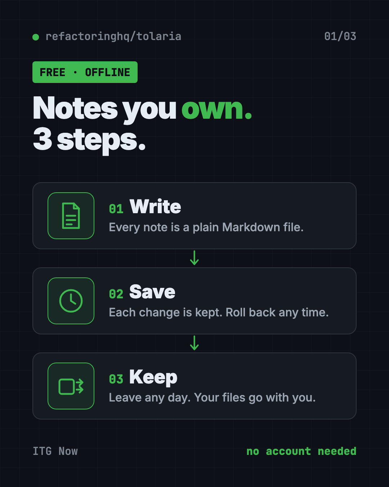
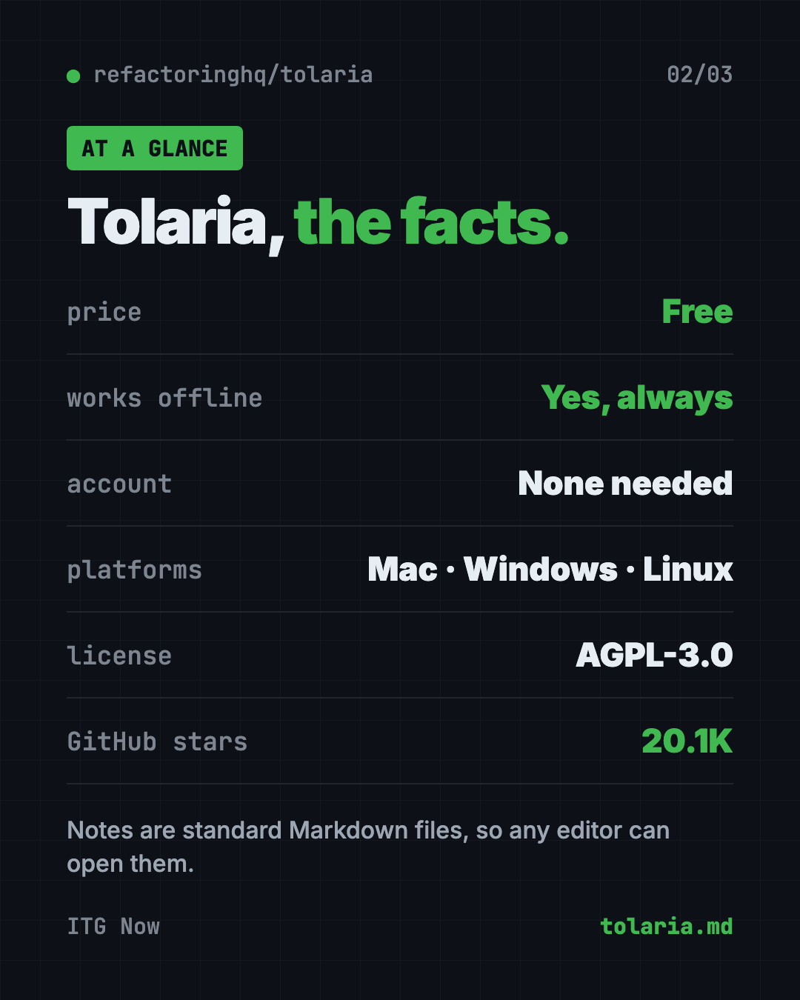
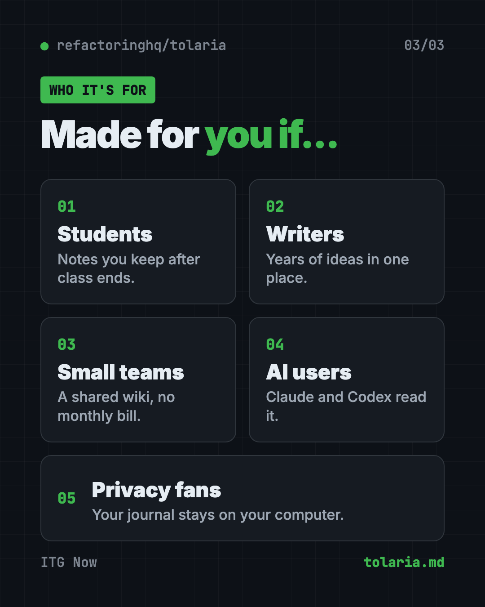

Tolaria: A Free Offline Notes App You Fully Own (2026)
- Published 15 Oct 2026
- Updated 16 Oct 2026
- 8 min read
- License AGPL-3.0
- By the ITG Now team
Tolaria is a free offline notes app for Mac, Windows and Linux that saves every note as a plain text file on your own computer. No account, no subscription, and if you ever leave, you keep everything.
Below you'll find what it does, real ways to use it, how to install it, and a ready prompt so an AI helper can set it up for you.
Key takeaways
- Free and open source. No paid plan, no account, no cloud you have to trust.
- Your notes are normal files. Each one is a Markdown file you can open in any text editor.
- Every change is saved. Each notes folder keeps a full history, so you can roll back mistakes.
- Works with AI helpers. The README lists setup paths for Claude Code, Codex CLI and Gemini CLI.
- Built from real use. The creator runs his own 10,000+ notes in it every day.
What is Tolaria?
Tolaria is a desktop app for keeping notes and knowledge in one place. Its README describes it as an app "for managing markdown knowledge bases."
Markdown is just plain text with a few simple marks. A # makes a heading. A - makes a bullet. Any computer can open it, today or in 20 years.
The app is made by Luca, the writer behind the Refactoring newsletter. He says he uses Tolaria to "run my life," with a workspace of over 10,000 notes. The project has about 20.1K stars on GitHub. Stars work like bookmarks, so lots of people are watching it.
The README lists three common uses:
- Running a "second brain," a personal collection of notes and ideas.
- Organizing company documents so AI tools can read them.
- Storing memory and instructions for AI assistants like OpenClaw.

How is Tolaria different from other notes apps?
Most notes apps keep your notes in their own format, on their own servers. Leaving can mean a messy export, or losing your folders and links.
Tolaria flips that. Here are its main promises, straight from the README:
- Files first. Notes are plain Markdown files. "Your data belongs to you, not to any app."
- Version history built in. Every notes folder (Tolaria calls it a vault) is a Git repository. Git is a free tool that saves every version of every file. You can also back it up to any Git service you like.
- Offline first. No accounts, no subscriptions, no cloud. The README says your vault "works completely offline and always will."
- No lock-in. Notes use a standard format with a small info block at the top. If you stop using Tolaria, "you lose nothing."
- Keyboard first. It's built for people who like shortcuts, with a command palette to jump around fast.
💡 Tip: Because your notes are just files, you can open the same folder in another app any time. That's a nice safety net if you're nervous about trying something new.
How to use Tolaria (real examples)
- Build your second brain. Save book notes, quotes, ideas and plans in one searchable place that's yours forever.
- Run a work wiki. Keep meeting notes, how-to guides and project docs in one vault your team can share through Git.
- Feed your AI helper. Point Claude Code or Codex at your vault, and it can read your notes to answer questions or draft documents.
- Keep a private journal. Write daily entries that never touch a company server.
- Clip web pages for later. The creator shares a short video on how he saves web resources into his vault.
The README links three short Loom walkthrough videos. They show how he organizes his workspace, runs his inbox, and saves web pages. Watch them before you build your own system.
Is Tolaria really free?
Yes. The README calls Tolaria "free and open source" and lists "no accounts, no subscriptions." There's no paid tier mentioned.
The code uses the AGPL-3.0 license. In plain words, anyone can use, read and change it. If someone shares a changed version, they must share their code too. The Tolaria name and logo are protected by a trademark policy, so copies can't use them.
The project is backed by a few sponsors, including Codacy, CodeScene, CircleCI and Unblocked.
Tolaria at a glance
| Price | Free |
| Works offline | Yes, always |
| Account needed | No |
| Platforms | Mac, Windows, Linux |
| License | AGPL-3.0 (open source) |
| Note format | Plain Markdown files |
| Latest release | October 13, 2026 |
| Best for | Note-takers who want to own their files and use them with AI |

How to install Tolaria on Mac, Windows and Linux
These are the official steps from the Tolaria README.
- Download the app from the download page at refactoringhq.github.io/tolaria/download. It has versions for Mac, Windows and Linux.
- Install it like any other app.
- Open Tolaria. On first launch, you can copy a "getting started" vault. It's a sample notes folder that walks you through the whole app.
Install with one command on a Mac
If you have Homebrew (a free app installer for Mac), open Terminal. Copy and paste this:
brew install --cask tolaria
⚠️ Heads up: The README says Windows installers are signed, but a company-managed laptop may still need IT to approve Tolaria before you can install it.
The README also has steps for developers who want to build the app from its source code. You don't need those to use it.
Let Claude or Codex set it up for you
Claude Code and OpenAI Codex are AI helpers that can run setup steps on your computer. You paste a request, it does the work, and you approve each step.
Copy and paste this:
Please help me install Tolaria, the free offline notes app.
1. Check whether I'm on Mac, Windows or Linux.
2. If I'm on a Mac with Homebrew, run: brew install --cask tolaria
Otherwise, open https://refactoringhq.github.io/tolaria/download/ and help me pick the right file.
3. Explain each step in plain words before you run it.
4. When it's installed, help me open it and load the getting started vault.
Then try asking:
Read my Tolaria vault and make me a one-page summary of my notes from this week.
Help me set up a simple folder plan in Tolaria for work, home and ideas.
Back up my Tolaria vault to a private GitHub repository, step by step.
💡 Tip: Say yes only to steps you understand. If a command looks odd, ask the AI "what does this do?" first.
Who should use Tolaria?
- Students who want class notes they'll still have after graduation.
- Writers and creators with years of ideas spread across apps.
- Small teams that want a shared wiki without another monthly bill.
- AI fans who want their notes in a format Claude or Codex can read.
- Privacy fans who don't want their journal on someone else's server.
It's a desktop app, so it's not built for jotting notes on your phone.

Our take
Tolaria is a strong pick if you've ever worried about getting stuck in a notes app. Plain files plus full history is a simple, honest design.
What we like:
- Your notes stay yours, in a format that will outlive any app.
- No account and no subscription, ever.
- Version history comes free with every vault.
- It plays well with AI helpers by design.
- It's built by someone who uses it daily on a huge workspace.
What to watch for:
- It's aimed at keyboard lovers, so expect a short learning curve.
- Version history uses Git, which can feel strange if you've never seen it.
- There's no phone app mentioned in the README.
- It's moving fast, with frequent new releases.
If you like Tolaria's "own your stuff" idea, look at Open Notebook, a private NotebookLM you fully own. Want an AI that remembers past chats? Read our MemPalace guide. And if you plan to store memory for an assistant, see our OpenClaw guide.
FAQ
Is Tolaria free?
Yes. Tolaria is free and open source under the AGPL-3.0 license. It needs no account and has no subscription.
Does Tolaria work offline?
Yes. The README says your vault works completely offline and always will. You only need the internet to download it.
Where does Tolaria store my notes?
On your own computer, as plain Markdown files inside a folder called a vault. Each vault is also a Git repository with full history.
Can I use Tolaria with Claude Code or Codex?
Yes. The README lists setup paths for Claude Code, Codex CLI and Gemini CLI. It also includes an instructions file that helps AI agents understand your vault.
Does Tolaria run on Windows and Linux?
Yes. Tolaria has downloads for Mac, Windows and Linux. Mac users can also install it with Homebrew.
What happens to my notes if I stop using Tolaria?
Nothing bad. Your notes are standard files, so you can open them in any other editor. The README says you lose nothing.
Get Tolaria: github.com/refactoringhq/tolaria
More free notes and productivity tools
- Twenty Twenty is a free Salesforce alternative: an open source CRM to track customers, deals and emails. Host it yourself for free or use their cloud.
- Odysseus Odysseus is a free self-hosted AI workspace for chat, deep research, documents, email, notes and calendar. You run it yourself, so your data stays with you.
- Project NOMAD Project NOMAD is a free offline knowledge server with Wikipedia, medical guides, Khan Academy courses, maps and a local AI that work with no internet.
Latest AI news
- Meta gives away its big Muse Spark AI for free
- Nanbeige releases open 33B model for coding and office agents
- Google AI Studio spotted with managed agents hub
- Reddit's r/opensource bans AI-made projects and non-English posters
Keep reading

Twenty: Free Salesforce Alternative, Open Source CRM
Twenty is a free Salesforce alternative: an open source CRM to track customers, deals and emails. Host it yourself for free or use their cloud.